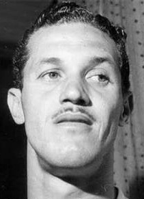
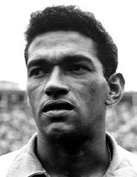
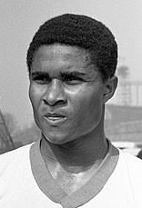

GOLEADOR
8

Guillermo Stábile
(Argentina)
Fifa Copa del Mundo, Uruguay 1930
Centario, Montevideo
Uruguay 4-2 Argentina

GOLEADOR
5

Oldřich Nejedlý
(Checoslovaquia)
Fifa Copa del Mundo, Italia 1934
Nazionale, Roma
Italia 2-1 Checoslovaquia

GOLEADOR
7
Leônidas
(Brasil)
Fifa Copa del Mundo, Francia 1938
Colombes, Paris
Italia 4-2 Hungria

GOLEADOR
9

Ademir
(Brasil)
Fifa Copa del Mundo, Brasil 1950
Maracana, Rio de Janeiro
Uruguay 2-1 Brasil

GOLEADOR
11

Sándor Kocsis
(Hungría)
Fifa Copa del Mundo, Suiza 1954
Wankdorf, Berne
Alemania 3-2 Hungría

GOLEADOR
13

Just Fontaine
(Francia)
Fifa Copa del Mundo, Suecia 1958
Rasunda, Solna, Stockholm
Brasil 5-2 Suecia

GOLEADOR
4

Garrincha (Brasil)
Fifa Copa del Mundo, Chile 1962
Nacional, Santiago
Brasil 3-2 Checoslovaquia

GOLEADOR
9

Eusébio
(Portugal)
Fifa Copa del Mundo, Inglaterra 1966
Wembley, Londres
Inglaterra 4-2 Alemania
GOLEADOR
10

Gerd Müller
(Alemania)
Fifa Copa del Mundo, México 1970
Azteca, Ciudad de Mexico
Brasil 4-1 Italia

GOLEADOR
7

Grzegorz Lato
(Polonia)
Fifa Copa del Mundo, Alemania 1974
Olympiastadion, Munich
Paises Bajos 1-2 Alemania

GOLEADOR
6

Mario Kempes
(Argentina)
Fifa Copa del Mundo, Argentina 1978
Monumental, Buenos Aires
Argentina 3-1 Paises Bajos

GOLEADOR
6

Paolo Rossi
(Italia)
Fifa Copa del Mundo, España 1982
Bernabéu, Madrid
Italia 3-1 Alemania

GOLEADOR
6

Gary Lineker
(Inglaterra)
Fifa Copa del Mundo, México 1986
Azteca, Ciudad de Mexico
Argentina 3-2 Alemania

GOLEADOR
6

Salvatore Schillaci
(Italia)
Fifa Copa del Mundo, Italia 1990
Olimpico, Roma
Alemania 1-0 Argentina

GOLEADOR
6


Hristo Stoichkov (Bulgaria)
Oleg Salenko (Rusia)
Fifa Copa del Mundo, Estados Unidos 1994
Rose Bowl, Pasadena
Brasil 0 (3)-(2) 0 Italia

GOLEADOR
6

Davor Suker
(Croacia)
Fifa Copa del Mundo, Francia 1998
Stade de France, Saint-Denis, Paris
Brasil 0-3 Francia

GOLEADOR
8
Ronaldo
(Brasil)
Fifa Copa del Mundo, Corea/Japon 2002
International, Yokohama
Alemania 0-2 Brasil

GOLEADOR
5

Mirosiav Kiose
(Alemania)
Fifa Copa del Mundo, Alemania 2006
Olympiastadion, Berlin
Italia 1 (5)-(3) 1 Francia

GOLEADOR
5

Thomas Müller
(Alemania)
Fifa Copa del Mundo, Sudafrica 2010
Soccer City, Johannesburg
Paises Bajos 0-1 España

GOLEADOR
6

James Rodríguez
(Colombia)
Fifa Copa del Mundo, Brasil 2014
Maracana, Rio de Janeiro
Alemania 1-0 Argentina

GOLEADOR
6

Harry Kane
(Inglaterra)
Fifa Copa del Mundo, Rusiia 2018
Luzhniki, Moscow
Francia 4-2 Croacia

GOLEADOR
4

Kylian Mbappé
(Fracia)
Fifa Copa del Mundo, Qatar 2022
Lusail Stadium, Lusail
Argentina 3 (4)-(2) 3 Francia